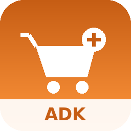

```html
ADK Demande d'Achat

ADK Demande d'Achat
Gestion complète des demandes d'achat internes dans Odoo 18 :
circuit d'approbation, appels d'offres multi-fournisseurs,
suivi des commandes et livraisons, reporting par article.
Odoo 18 ·
Circuit d'approbation ·
RFQ multi-fournisseurs ·
Suivi des livraisons ·
Reporting par article
Rôles utilisateurs
Le module ajoute deux rôles d'accès. Vérifiez qu'ils correspondent
à l'organisation de votre équipe avant la mise en production.
Utilisateur Demande d'Achat
- Crée ses propres demandes d'achat et leurs lignes d'articles
- Peut les modifier et les soumettre tant qu'elles restent en Brouillon
- Peut réinitialiser une demande Refusée pour la corriger et la resoumettre
- Accès en lecture/écriture aux demandes et à leurs lignes (aucune suppression)
Manager Demande d'Achat
- Cumule tous les droits Utilisateur, plus le droit Achats (Manager)
- Seul habilité à Approuver ou Rejeter une demande « À approuver »
- Seul habilité à réinitialiser en Brouillon une demande déjà Approuvée
- Seul habilité à clôturer (« Terminer ») une demande Approuvée
- Accès complet (création/modification/suppression) sur les demandes et leurs lignes
Le processus, étape par étape
1. Droits d'accès
Les rôles Utilisateur et Manager Demande d'Achat s'attribuent depuis
Paramètres > Utilisateurs, comme n'importe quel droit Odoo.
2. Création de la demande (Brouillon)
Le demandeur ajoute ses lignes d'articles avec la quantité souhaitée,
puis soumet la demande à l'autorisation.
3. Approbation par le Manager
Le Manager examine la demande « À approuver » et peut l'Approuver,
la Rejeter, ou la Réinitialiser en Brouillon.
4. Sélection des fournisseurs et RFQ
Une fois Approuvée, la demande permet de cocher des lignes,
renseigner un fournisseur suggéré par ligne, et créer une ou
plusieurs demandes de prix.
5. Suivi des commandes
Les bons de commande, lignes de commande et transferts de réception
générés restent accessibles en un clic depuis la demande.
6. Tableau de bord
Une vue kanban regroupe les demandes avec leur avancement,
leurs coûts et leur fournisseur.
7. Analyse croisée par article
La vue pivot croise articles et périodes pour suivre les quantités
demandées, commandées et reçues dans le temps.
Cycle de vie d'une demande
Cinq états, un circuit clair.
- Brouillon — créée par le demandeur, tout reste modifiable
-
À approuver — en attente d'une décision du Manager
(Approuver, Rejeter, ou Réinitialiser)
-
Approuvé — sélection des lignes, fournisseurs et création
des demandes de prix ; le Manager peut réinitialiser en Brouillon
ou terminer la demande
-
Refusé — le demandeur peut réinitialiser en Brouillon
pour corriger et resoumettre
-
Terminé — demande clôturée par le Manager, conservée
pour l'historique et le reporting
Verrouillage des données :
une fois sortie du Brouillon, la demande verrouille ses champs
d'en-tête et ses lignes existantes (seules les cases « Inclure DP »
et « Fournisseur suggéré » restent modifiables en Approuvé,
le temps de préparer les demandes de prix).
Protection anti-suppression :
une demande d'achat ne peut pas être supprimée si elle a déjà
généré au moins un bon de commande, une ligne de commande
ou une réception.
Intégration native avec l'application Achats
-
Un bouton statistique « Demande d'achat » sur le bon de commande
ramène directement à la demande ADK d'origine
-
Une colonne et un filtre de recherche « Demande d'achat »
sont disponibles dans la liste des commandes
(Achats → Commandes)
-
Menu « Demandes d'achat (ADK) » : toutes les demandes,
tous statuts
-
Menu « Lignes de commande (ADK) » : suivi ligne par ligne,
tous articles confondus
-
Menu « Tableau de bord articles (ADK) » :
vision transverse par article
Fonctionnalités
-
Workflow contrôlé — Brouillon → À approuver →
Approuvé → Terminé, avec refus et réinitialisation
encadrés par les rôles
-
RFQ multi-fournisseurs — sélection ligne par ligne,
une demande de prix par fournisseur, générable en plusieurs
vagues successives
-
Suivi complet — bons de commande, lignes de commande
et transferts de réception accessibles en un clic depuis la demande
-
Traçabilité — chatter, suivi des changements de champs
et activités sur chaque demande ; suppression impossible
une fois des documents générés
-
Reporting — kanban, liste, graphique, pivot, calendrier
et tableau de bord dédié par article
-
Rapport PDF — impression de la demande d'achat complète
avec ses lignes, coûts estimés et fournisseurs suggérés
Module 100% natif Odoo 18, construit sur les applications
Achats (purchase, purchase_stock), Stock, RH et Discuss (mail),
sans dépendance externe.
Support et auteur
Auteur : Kambeu Henang Ange Duval
Support :
duvalkambeu61@gmail.com
Une question, un bug, une demande d'évolution ?
Contactez-nous, nous répondons rapidement.
```